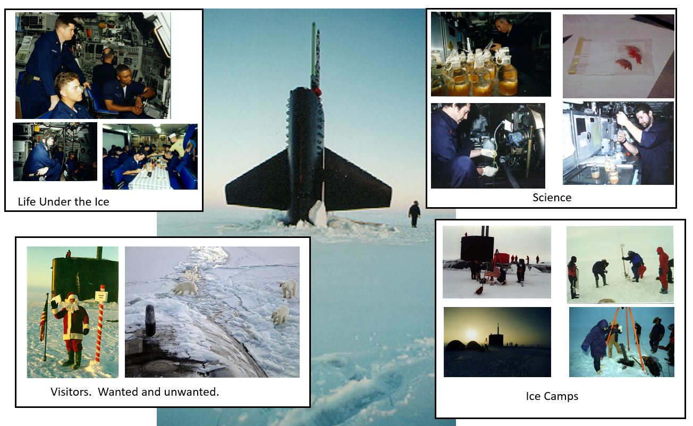

Well, thanks for playing my little game. As I said, we now know a little about each other. I know your name, and you know I spent some time on a submarine and traveled under the ice. This voyage was done in 1996 as part 2 of a 6 part, long term, unclassified science mission known as Scicex (Science Exercise) to study the efects of climate change on the polar ice cap. Below ae some pictures taken on the mission.
